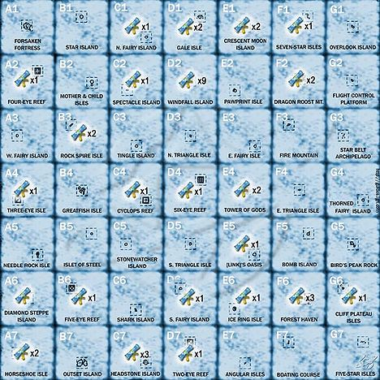
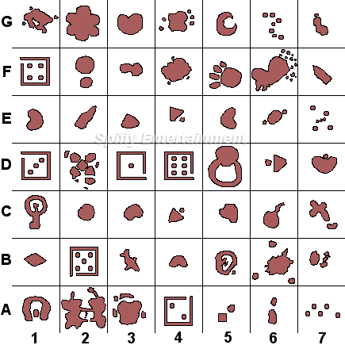
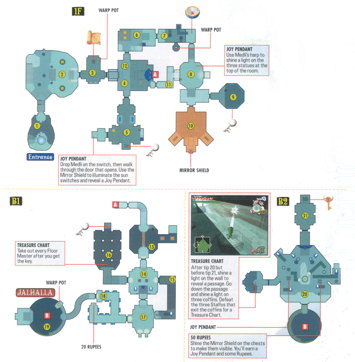
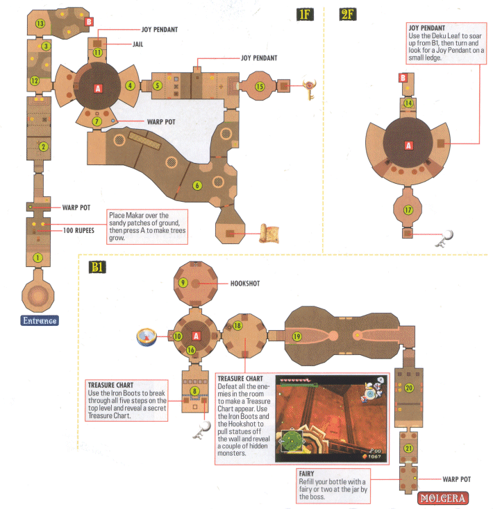
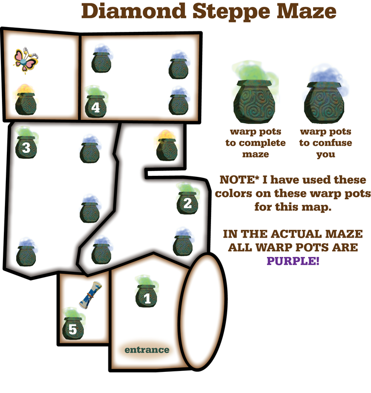
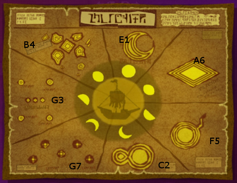
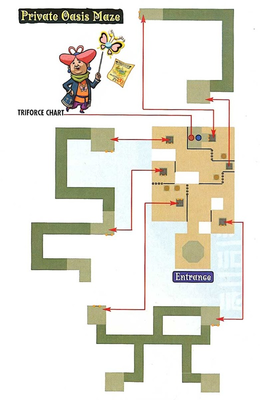
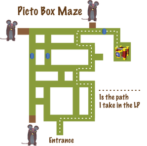

Wind Waker (Wii U/GameCube)
Essential
Island Map Convention
Columns are A–G and rows are 1–7.

Island Symbols

Walkthrough
- Outset Island
- Forsaken Fortress
- Windfall Island
- Dragon Roost Island and Cavern
- Forest Haven
- Forbidden Woods
- Nayru's Pearl
- Tower of the Gods
- Hyrule Castle
- Earth Temple
- Wind Temple
- Collect Triforce Shards
- Ganon's Tower
Pirate Code
Password to enter pirate ship is Schooner.
Fire and Ice Arrows
B2
Power Gauntlets
F3, need Fire/Ice Arrows.
Iron Boots
E6
Earth Temple

Wind Temple

Diamond Steppe Maze

Moon Phases
- Full — E-1, Crescent Moon Island
- Waxing Gibbous — A-6, Diamond Steppe Island
- First Quarter — F-5, Bomb Island
- Waxing Crescent — C-2, Spectacle Island
- Waning Crescent — G-7, Five Star Isles
- Third Quarter — G-3, Star Belt Archipelago
- Waning Gibbous — B-4, Greatfish Isle
Ghost Ship Location

Navigating Ghost Ship
Farthest pot, closest pot, farthest on left.
Triforce Charts/Shards
There are 8 shards. In the HD version you can get the first 5 by using Incredible Map. The last 3 must be deciphered by Tingle (C3) for 398 each before they can be gotten. In the GameCube version all charts must be deciphered.
- Islet of Steel (B5)
- Private Oasis (E5)
- Bird's Peak Rock (G5)
- Ghost Ship
- Needle Rock Isle (A5)
- Outset Island (B7)
- Stone Watcher Island (C5)
- Overlook Island (G1)
Private Oasis Maze

Ganon's Tower Candle Order
From left to right: 3-1-4-2
Optional
Bottles
- Main Story Line, Dragon Roost Cavern (F-2), given by Medli.
- Submarine, near Bomb Isle (F-5).
- Buy from Beedle for 500 near Rock Spire Isle (B-3).
- Thief Mini Quest, Windfall (D-2). Have to beat Bird at Forsaken Fortress first.
Picto Box Maze

Swift Sail
Won at auction on Windfall for 200–300. Auction house is open at night. Let Red Dragon sail faster.
Ballad of Gales Song
Shoot Cyclone with arrows.
Magic Meter Upgrade
D7
Rupee Upgrade #1
Outset Island, need bombs and leaf.
Rupee Upgrade #2
C2
Fairy Arrow Upgrade #1
G4, need hammer.
Magic Armor
Need to complete trader quest from Windfall, B2, B4, F5.
Game Improvements
- Need more hotkeys for items.
- Shield controls for girl should be the same as Link.
- Quick switch for command song.
- Travel to any uncovered island with Gale Song.
- Move and shoot cannon at the same time.
- Consistent controls across characters (Link, birds, etc.). Better Link turning.